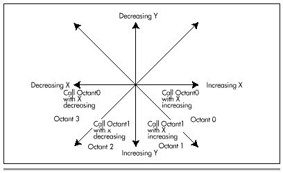

| Previous | Table of Contents | Next |
There is one line-drawing function for octants 0 and 3, Octant0, and one line-drawing function for octants 1 and 2, Octant1. A single function with if statements could certainly be used to handle all four octants, but at a significant performance cost. There is, on the other hand, very little performance cost to grouping octants 0 and 3 together and octants 1 and 2 together, since the two octants in each pair differ only in the direction of change of the X coordinate.
EVGALine determines which line-drawing function to call and with what value for the direction of change of the X coordinate based on two criteria: whether DeltaX is negative or not, and whether the absolute value of DeltaX (|DeltaX|) is less than DeltaY or not, as shown in Figure 35.5. Recall that the value of DeltaY, and hence the direction of change of the Y coordinate, is guaranteed to be non-negative as a result of the earlier elimination of four of the line orientations.
After calling the appropriate function to draw the line (more on those functions shortly), EVGALine restores the state of the Enable Set/Reset register to its default of zero. In this state, the Set/Reset register has no effect, so it is not necessary to restore the state of the Set/Reset register as well. EVGALine also restores the state of the Bit Mask register (which, as we will see, is modified by EVGADot, the pixel-drawing routine actually used to draw each pixel of the lines produced by EVGALine) to its default of 0FFH. While it would be more modular to have EVGADot restore the state of the Bit Mask register after drawing each pixel, it would also be considerably slower to do so. The same could be said of having EVGADot set the Enable Set/Reset and Set/Reset registers for each pixel: While modularity would improve, speed would suffer markedly.

Figure 35.5 EVGALine’s decision logic.
The Octant0 and Octant1 functions draw lines for which |DeltaX| is greater than DeltaY and lines for which |DeltaX| is less than or equal to DeltaY, respectively. The parameters to Octant0 and Octant1 are the starting point of the line, the length of the line in each dimension, and XDirection, the amount by which the X coordinate should be changed when it moves. XDirection must be either 1 (to draw toward the right edge of the screen) or -1 (to draw toward the left edge of the screen). No value is required for the amount by which the Y coordinate should be changed; since DeltaY is guaranteed to be positive, the Y coordinate always changes by 1 pixel.
Octant0 draws lines for which |DeltaX| is greater than DeltaY. For such lines, the X coordinate of each pixel drawn differs from the previous pixel by either 1 or -1, depending on the value of XDirection. (This makes it possible for Octant0 to draw lines in both octant 0 and octant 3.) Whenever ErrorTerm becomes non-negative, indicating that the next Y coordinate is a better approximation of the line being drawn, the Y coordinate is increased by 1.
Octant1 draws lines for which |DeltaX| is less than or equal to DeltaY. For these lines, the Y coordinate of each pixel drawn is 1 greater than the Y coordinate of the previous pixel. Whenever ErrorTerm becomes non-negative, indicating that the next X coordinate is a better approximation of the line being drawn, the X coordinate is advanced by either 1 or -1, depending on the value of XDirection. (This makes it possible for Octant1 to draw lines in both octant 1 and octant 2.)
At the core of Octant0 and Octant1 is a pixel-drawing function, EVGADot. EVGADot draws a pixel at the specified coordinates in whatever color the hardware of the VGA happens to be set up for. As described earlier, since the entire line drawn by EVGALine is of the same color, line-drawing performance is improved by setting the VGA’s hardware up once in EVGALine before the line is drawn, and then drawing all the pixels in the line in the same color via EVGADot.
EVGADot makes certain assumptions about the screen. First, it assumes that the address of the byte controlling the pixels at the start of a given row on the screen is 80 bytes after the start of the row immediately above it. In other words, this implementation of EVGADot only works for screens configured to be 80 bytes wide. Since this is the standard configuration of all of the modes EVGALine is designed to work in, the assumption of 80 bytes per row should be no problem. If it is a problem, however, EVGADot could easily be modified to retrieve the BIOS integer variable at address 0040:004A, which contains the number of bytes per row for the current video mode.
Second, EVGADot assumes that screen memory is organized as a linear bitmap starting at address A000:0000, with the pixel at the upper left of the screen controlled by bit 7 of the byte at offset 0, the next pixel to the right controlled by bit 6, the ninth pixel controlled by bit 7 of the byte at offset 1, and so on. Further, it assumes that the graphics adapter’s hardware is configured such that setting the Bit Mask register to allow modification of only the bit controlling the pixel of interest and then ORing a value of 0FEH with display memory will draw that pixel correctly without affecting any other dots. (Note that 0FEH is used rather than 0FFH or 0 because some optimizing compilers turn ORs with the latter values into simpler operations or optimize them away entirely. As explained later, however, it’s not the value that’s ORed that matters, given the way we’ve set up the VGA’s hardware; it’s the act of ORing itself, and the value 0FEH forces the compiler to perform the OR operation.) Again, this is the normal way in which modes 0EH, 0FH, 10H, and 12H operate. As described earlier, EVGADot also assumes that the VGA is set up so that each pixel drawn in the above-mentioned manner will be drawn in the correct color.
Given those assumptions, EVGADot becomes a surprisingly simple function. First, EVGADot builds a far pointer that points to the byte of display memory controlling the pixel to be drawn. Second, a mask is generated consisting of zeros for all bits except the bit controlling the pixel to be drawn. Third, the Bit Mask register is set to that mask, so that when display memory is read and then written, all bits except the one that controls the pixel to be drawn will be left unmodified.
Finally, 0FEH is ORed with the display memory byte controlling the pixel to be drawn. ORing with 0FEH first reads display memory, thereby loading the VGA’s internal latches with the contents of the display memory byte controlling the pixel to be drawn, and then writes to display memory with the value 0FEH. Because of the unusual way in which the VGA’s data paths work and the way in which EVGALine sets up the VGA’s Enable Set/Reset and Set/Reset registers, the value that is written by the OR instruction is ignored. Instead, the value that actually gets placed in display memory is the color that was passed to EVGALine and placed in the Set/Reset register. The Bit Mask register, which was set up in step three above, allows only the single bit controlling the pixel to be drawn to be set to this color value. For more on the various machineries the VGA brings to bear on graphics data, look back to Chapter 25.
| Previous | Table of Contents | Next |